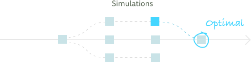
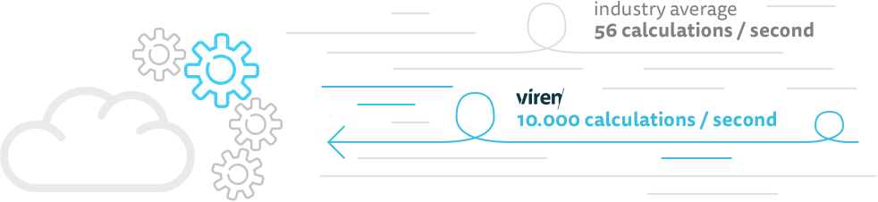
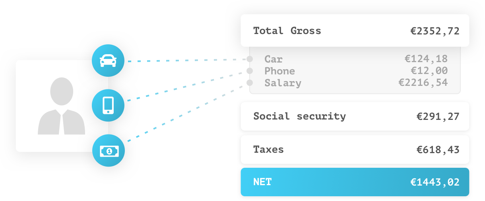

Optimize decision taking

Enable users to generate, simulate and compare different scenarios to support their quest in reaching
the optimal situation. The extreme performance and advanced versioning mechanism allow real-time simulation with
both data and upcoming legislation.
Real-time payroll

Process tens of thousands of calculations per second and get instant feedback about the
calculation results. With the Viren-platform, the days are over in which calculating your payroll takes hours
or even days to complete.
Correct management of evolving regulation

Guarantee compliant payroll calculation using the advanced versioning capabilities offered by the Viren-platform.
Get a clear overview of the continuously changing regulation and even predict the impact of upcoming legislative changes.
100% transparency enabling a true "digital trust"

Get access to all the details related with a calculation to enable a true "digital trust". The Viren-platform offers this
level of transparency both at design time, when implementing the calculation, and at runtime, when executing a calculation.